01钩子 / 问题
用开源立场建立冲突
开场引用黄仁勋对开源模型的态度，并否定‘只有美国开源才有国产机会’的旧叙事，把 Qwen2 放进全球竞争框架。
Qwen2 以多尺寸、长上下文和多任务能力挑战 Llama 3，而开源与免费使它比昂贵封闭的 GPT-4 更适合普通用户。
视频有观点、有参数也有行动建议，但它用大量行业判断和权威背书推进，缺少一次真实任务的前后结果；机器转写中的专有名词也需要复核。
Qwen2 以多尺寸、长上下文和多任务能力挑战 Llama 3，而开源与免费使它比昂贵封闭的 GPT-4 更适合普通用户。
不是复述内容，而是标出每一段承担的叙事任务、观众问题和画面证据。
开场引用黄仁勋对开源模型的态度，并否定‘只有美国开源才有国产机会’的旧叙事，把 Qwen2 放进全球竞争框架。
中段列举 Qwen2 从 0.5B 到 72B 的尺寸、128K 上下文，以及多语言、推理和代码等能力，并声称其全面压过 Llama 3。
视频继续援引行业人士和海外开发者的使用，随后把 OpenAI 描述为封闭、傲慢和昂贵。论证依赖权威和立场，没有展示同任务对比。
结尾说明半年前会推荐 GPT-4，现在建议直接使用国产开源模型，并用评论区领取方式承接转化。剩余片段基本没有新增口播信息。
下列章节覆盖视频的主要论点、步骤与结果；每段都保留时间码和关键画面。
开场引用黄仁勋对开源模型的态度，并否定‘只有美国开源才有国产机会’的旧叙事，把 Qwen2 放进全球竞争框架。
中段列举 Qwen2 从 0.5B 到 72B 的尺寸、128K 上下文，以及多语言、推理和代码等能力，并声称其全面压过 Llama 3。
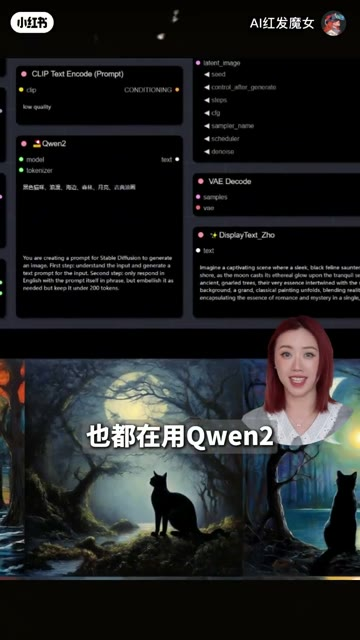
视频继续援引行业人士和海外开发者的使用，随后把 OpenAI 描述为封闭、傲慢和昂贵。论证依赖权威和立场，没有展示同任务对比。
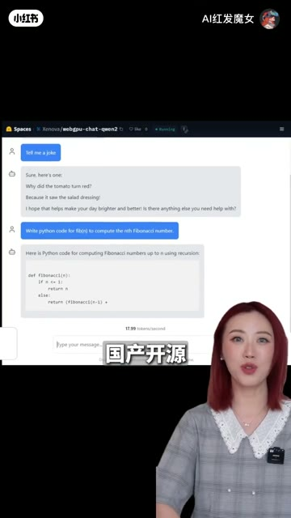
结尾说明半年前会推荐 GPT-4，现在建议直接使用国产开源模型，并用评论区领取方式承接转化。剩余片段基本没有新增口播信息。
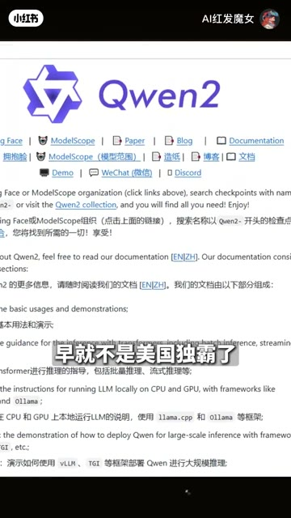
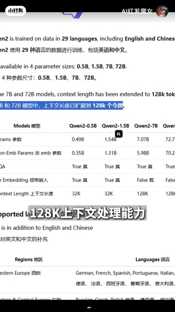
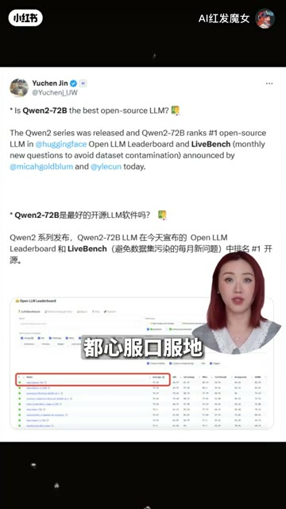

短视频每 1 秒、常规视频每 2 秒、超长视频每 3 秒取一帧。
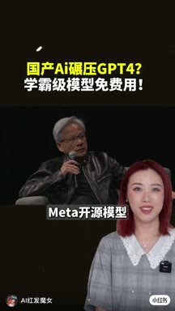
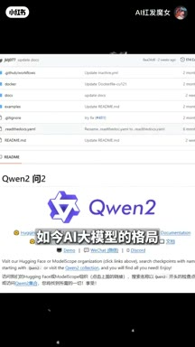
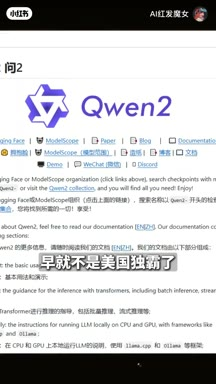
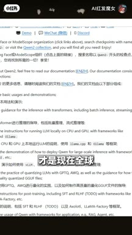
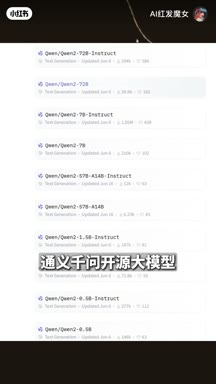
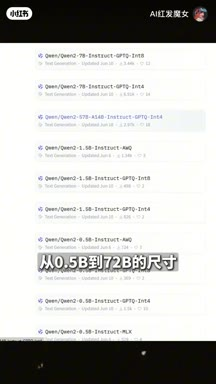
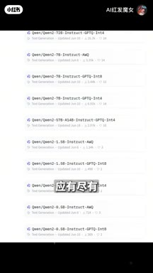
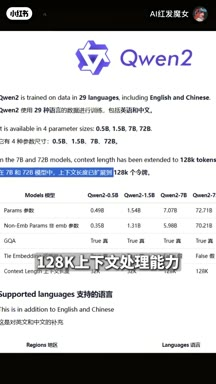
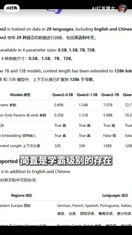
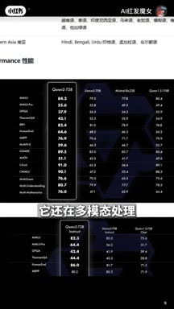
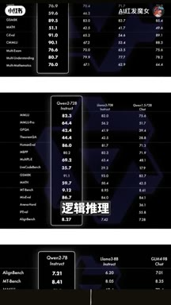
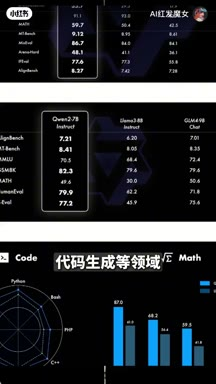
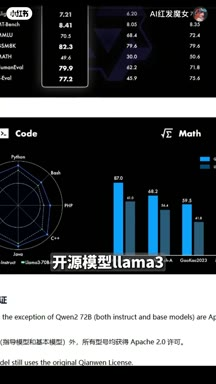
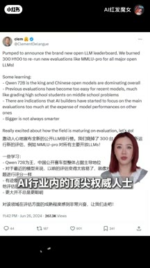
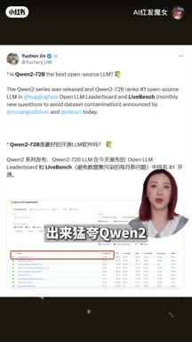
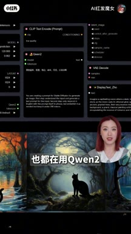
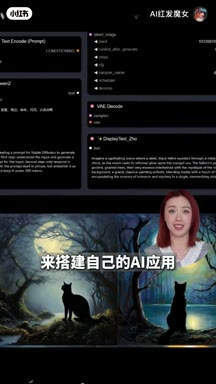
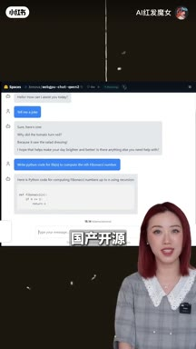
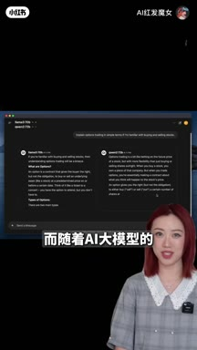
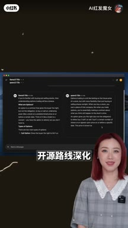
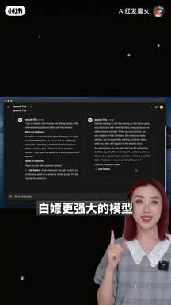


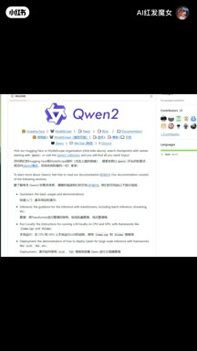
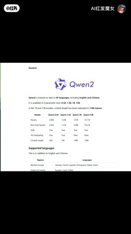
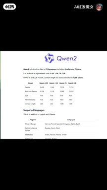
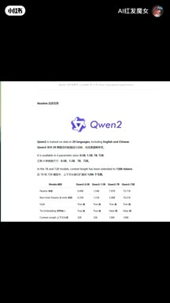
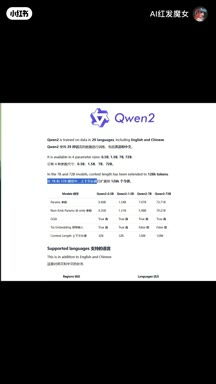
Whisper base 机器转写草稿 · 28 段 · 388 字。字幕只记录声音；工具名、界面文字和结果含义必须结合上方视觉知识地图复核。
黃仁熊猛跨META開源模型並表示AI大模型就該開源
之前可能有的朋友會說「美國一開源我們就有自言了」
自己別填了
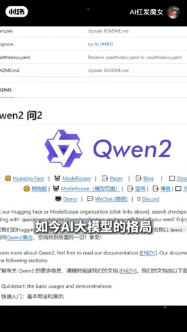
如今AI大模型的格局早就不是美國獨霸了
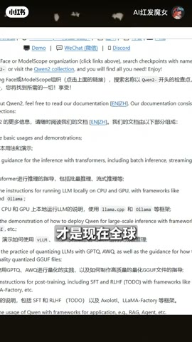
國產的千問二才是現在全球至首可熱的開源模型
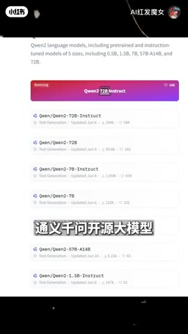
來自阿里雲的這款通意千問開源大模型
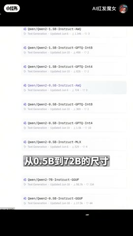
從0.5B到72B的尺寸因有進有
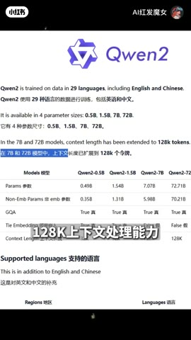
特別是72B版本128K上下文處理能力
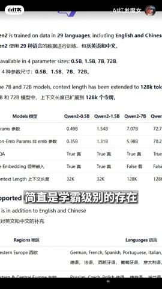
簡直是學霸級別的存在
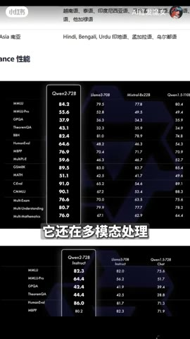
它還在多摩泰處理多語言理解
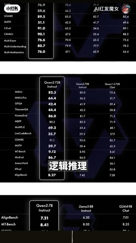
邏輯推理
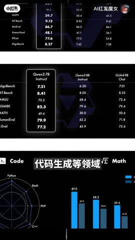
代碼生成等領域
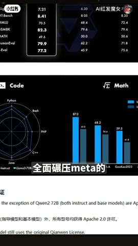
全面黏壓META的開源模型La Ma 3
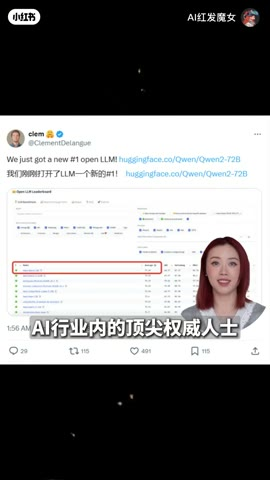
AI行業內的頂尖全位人士
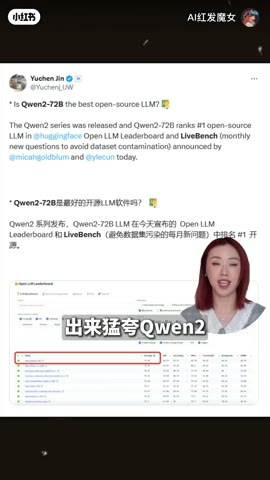
都幸福口服的出來猛跨千問二
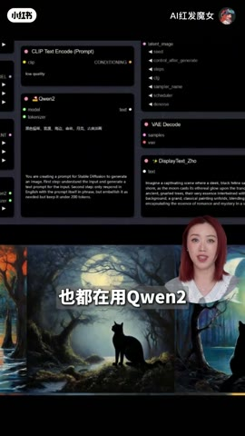
海外開發者們也都在用千問二來搭建自己的AI應用
而一直不 open的 openAI
現在看起來是那麼傲慢和昂貴
差不多半年前
如果有小夥伴問我用啥AI
我都會推薦 GPT-4
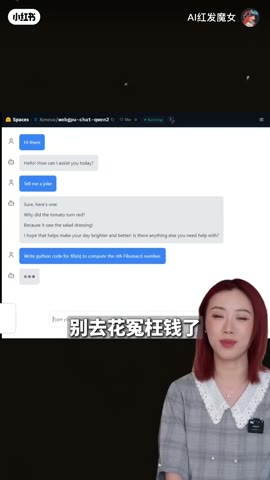
但現在朋友們別去花園望前了
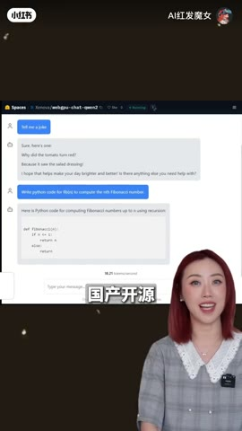
直接用免費的國產開源錯不了
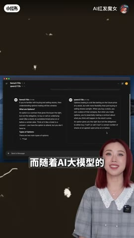
而隨著AI大模型的開源路線深化
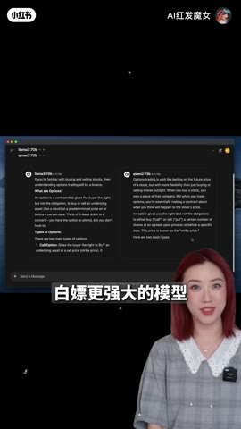
未來我們還能擺飄更強大的模型
千問二我已經打爆好了
需要的朋友評論去安排

( 字幕:J Chong )
官方字幕不可用，本页文字稿来自 Whisper base 机器转写，Qwen、Llama、参数和人名可能识别错误。模型对比主张需要独立基准与同任务实测。
打开小红书原帖 ↗